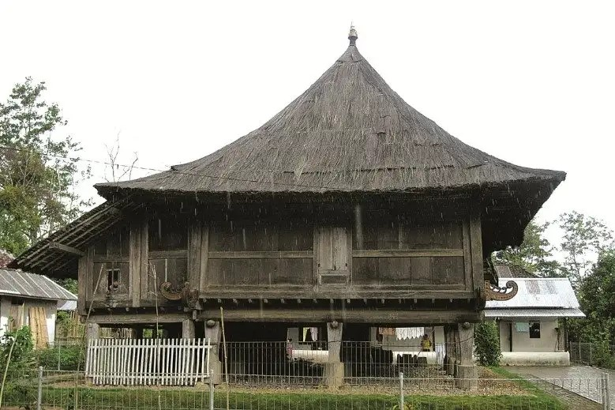
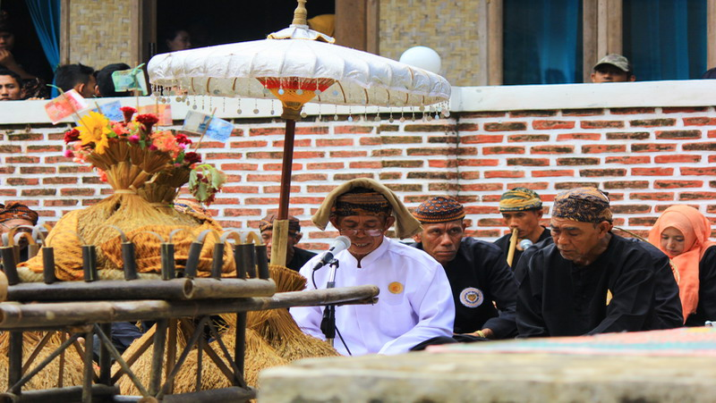
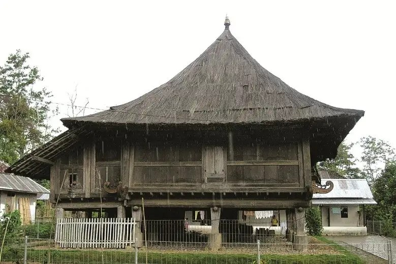
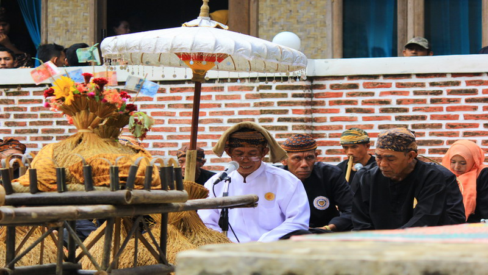

Beranda
Adat
Kuliner
Pariwisata
 Pakaian adat Banten ini hanya digunakan ketika acara respesi pernikahan. Secara desan dan motif pakaian adat pengantin ini sangat mirp dengan pakaian pengantin adat Sunda.
Dijelaskan bahwa Rumah Sulah Nyanda masih menyatu dengan alam. Rumah adat Banten ini terbuat dari bahan-bahan yang berasal di sekitarnya.Fondasi bangunannya terbuat dari batu dan pada bagian lantainya dibangun dari bambu yang dibelah.
Masyarakat adat Cisungsang menggelar puncak perayaan Seren Taun yang dilaksanakan setahun sekali sebagai ungkapan rasa syukur kepada Yang Maha Kuasa.Seren Taun merupakan penamaan untuk melaksanakan ritual tahunan yang kurang lebih berarti 'menyimpan padi di lumbung'. Seren Taun dilakukan oleh masyarakat yang disebut sebagai Kasepuhan Cisungsang
Pakaian adat Banten ini hanya digunakan ketika acara respesi pernikahan. Secara desan dan motif pakaian adat pengantin ini sangat mirp dengan pakaian pengantin adat Sunda.
Dijelaskan bahwa Rumah Sulah Nyanda masih menyatu dengan alam. Rumah adat Banten ini terbuat dari bahan-bahan yang berasal di sekitarnya.Fondasi bangunannya terbuat dari batu dan pada bagian lantainya dibangun dari bambu yang dibelah.
Masyarakat adat Cisungsang menggelar puncak perayaan Seren Taun yang dilaksanakan setahun sekali sebagai ungkapan rasa syukur kepada Yang Maha Kuasa.Seren Taun merupakan penamaan untuk melaksanakan ritual tahunan yang kurang lebih berarti 'menyimpan padi di lumbung'. Seren Taun dilakukan oleh masyarakat yang disebut sebagai Kasepuhan Cisungsang